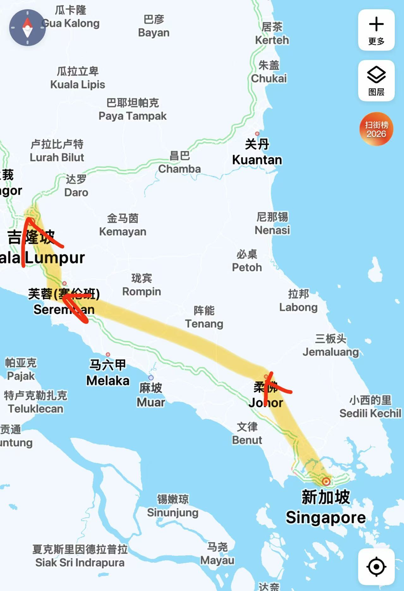
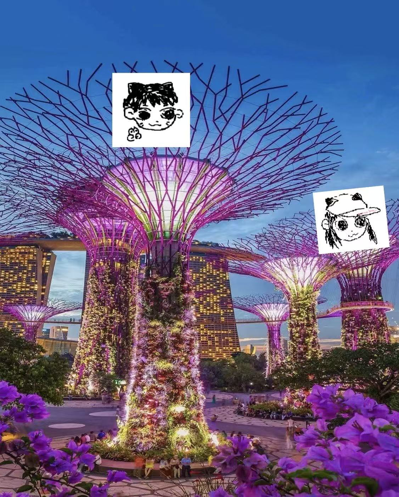
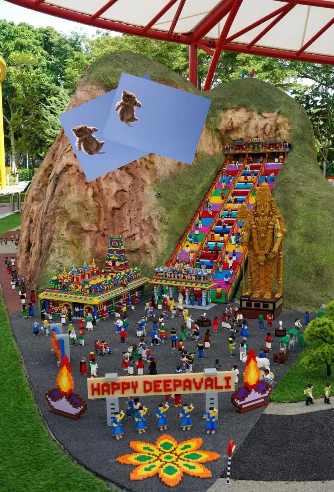
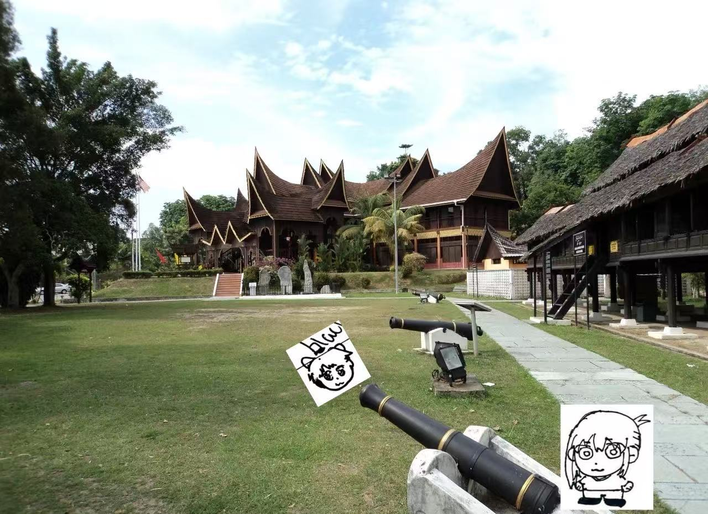
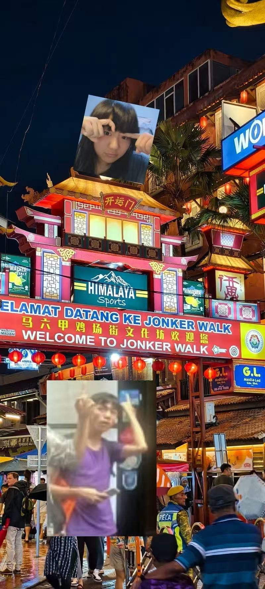

猫豆哒小野望
要是可以哒话，豆豆其飞来新加坡，猫豆其可以玩新马泰嘻

路线：新加坡→新山→芙蓉，各1~2天，备选：马六甲，吉隆坡，槟城，民丹岛
猫豆其咪咕哒
第一天·新加坡
1天抵达新加坡
从香港国际机场飞道新加坡樟宜机场，飞行约4小时，机票1000道1500HKD
核心游玩
滨海湾花园（花穹、云雾林、超级树灯光秀）—— 一天可以悠闲逛完，夜景绝美。
备选
- 牛车水+小印度（体验多元文化，距滨海湾3站地铁）
- 圣淘沙岛（海滩小火车、亚洲大陆最南端）
- 夜间动物园（需另购票，晚上前往）
- 环球影城
美食推荐
辣椒螃蟹、咖椰吐司、老巴刹沙爹、海南鸡饭。
住宿建议
牛车水附近精品酒店，交通便利又安全。

第二天·新山
1天通勤：新加坡 → 新山
从新加坡克兰芝地铁站(Kranji MRT)换乘170X巴士或CW1/CW2跨境巴士，过新柔长堤到新山中央车站。车程约1小时，费用约2-3新元（约10-15马币,8-12元人民币）。 包车或打车（Grab），约60-80马币/车。
核心游玩
乐高乐园（主题公园+水上乐园）—— 尽情玩一天，足够欢乐。
其他备选
- 柔佛古庙+陈旭年街（老城风情，适合拍照）
- JPO奥特莱斯（购物）
交通方式
新加坡搭CW巴士过海关即到，车程约1小时。
美食推荐
亚参鱼、粿条仔、榴莲煎蕊（Cendol）。

第三天·芙蓉
1天通勤：新山→芙蓉
从新山中央车站乘坐KTM火车（ETS或Komuter），直达芙蓉站。车程约3小时，约70道80马币，约120人民币。
核心游玩
芙蓉老城+湖滨公园（吃烧包、客家面，划船看猴）—— 慢悠悠逛大半天。
其他备选
- 波德申海滩（距离芙蓉30分钟车程，可傍晚去踩水）
- 皇家山（就在湖滨公园旁边，可一起玩）
交通方式
新山坐ETS火车约3小时，沿途棕榈园风光。
贴士
周末有夜市，可以买手工藤篮。

马六甲（备选）
1 天核心游玩
荷兰红屋 + 鸡场街 + 圣保罗教堂 —— 都在步行范围内，古色古香，拍照美食两不误。
其他备选
- 马六甲河游船
- 海上清真寺（傍晚看日落）
交通方式
从新山拉庆车站乘大巴至马六甲中央车站，车程约 2.5 小时，票价约 15 马币。也可从吉隆坡前往。
美食推荐
鸡粒饭、沙爹朱律、娘惹糕、椰子shake。
住宿建议
当日往返不住宿；
若过夜住鸡场街附近，约100-300马币。

小小哒PS
签证
其30天内免签去新加坡/马来西亚
最佳时间
9月-10月，雨季咪到，猫其探完路
预算
不含购物，食宿交通两咪约6000-8000块
注意安全
猫豆夜里面其避免偏僻哒地方，其防止被老拐子拐跑辣/p>